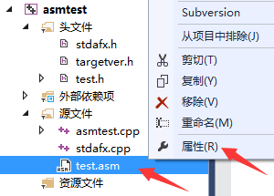
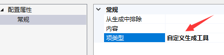
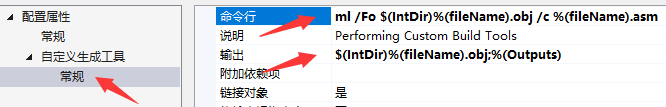

前言
有时候某些特殊的功能，需要我们使用汇编语言来实现，但是又没必要整个项目都用汇编语言，
所以使用汇编语言与C语言混合编程就成了最佳选择。
代码嵌入
在32位环境下，我们可以直接在C语言代码中嵌入汇编代码进行编程，这里不再专门说明。
1 | int myadd(int a, int b) |
合并文件
由于在64位环境下，无法直接在C语言代码中嵌入汇编代码，所以需要单独编写汇编文件，
编译成obj文件再与C语言进行合并。
在VS中，我们使用 ml.exe 和 ml64.exe 来单独编译 .asm 汇编代码文件。
在VS的 解决方案管理器 里，直接在 asm 文件上 右键 选择 属性 项

通常情况下 配置属性 里只有一个 常规 选项，在其中的 项类型 里修改为 自定义生成工具

点击 应用 之后，在 配置属性 里会多出 自定义生成工具 选项，我们在 命令行 和 输出 里添加指令

在32位环境下的命令行（asm文件在i386asm目录下）：
1 | ml /Fo $(IntDir)%(fileName).obj /c i386asm\%(fileName).asm |
在64位环境下的命令行（asm文件在amd64asm目录下）：
1 | ml64 /Fo $(IntDir)%(fileName).obj /c amd64asm\%(fileName).asm |
输出项对应的指令：
1 | $(IntDir)%(fileName).obj;%(Outputs) |
示例代码
在32位环境下的asm示例代码，以及对应的函数声明
1 | extern "C" int _cdecl mysub(int x, int y); |
1 | ;flat(平坦模式) c(C调用) stdcall(STD调用) |
1 | ;flat(平坦模式) c(C调用) stdcall(STD调用) |
在64位环境下的asm示例代码，以及对应的函数声明
1 | // x64汇编只有fastcall方式，并且与x86的fastcall不同 |
1 | .code |
DDK环境
在VS中无论编译应用程序，还是编译驱动程序，统一都是使用上述方法。
在DDK环境中编译驱动时，则是在source文件中增加文件包含：
1 | I386_SOURCES=\ |